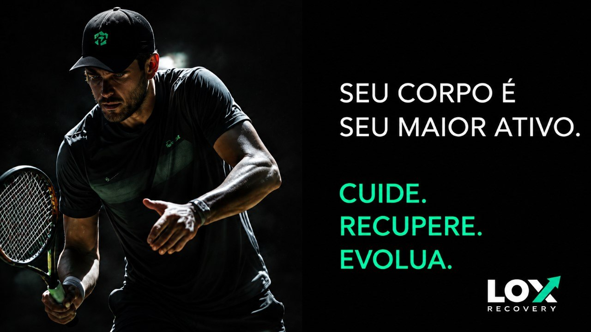

O que é a LOX?
LOX Recovery é um sistema de recuperação esportiva desenvolvido para acompanhar atletas antes, durante e após os ciclos de treinamento — não apenas o tratamento dos sintomas.
Recuperar faz parte do treinamento
A LOX nasceu da experiência prática com atletas e pessoas fisicamente ativas que treinavam intensamente, mas não possuíam um acompanhamento profissional voltado para a recuperação.
Em muitos casos, a recuperação era vista como algo secundário. Queremos mudar essa realidade, mostrando que recuperar faz parte do treinamento.
Equilíbrio entre estímulo e recuperação
Performance não é construída apenas durante o treino. O corpo evolui quando existe equilíbrio entre estímulo, recuperação e continuidade.
Por isso acreditamos em um acompanhamento planejado e individualizado — nunca em protocolos iguais para todos.
Cinco etapas. Um único sistema.
Avaliação
Conversa inicial e avaliação física completa.
Planejamento
Definição da estratégia de recuperação individual.
Tratamento
Aplicação das técnicas mais indicadas ao caso.
Acompanhamento
Orientação contínua de cuidados e frequência.
Reavaliação
Ajuste da estratégia conforme a evolução do atleta.
O que buscamos ajudar você a alcançar
- Recuperar-se entre os treinos
- Manter a qualidade de movimento
- Reduzir o acúmulo de fadiga
- Prevenir sobrecargas
- Treinar com maior consistência

Dúvidas comuns sobre o método
Depende da rotina de treino, dos objetivos e da avaliação inicial.
Não. Também atendemos pessoas fisicamente ativas que desejam cuidar melhor da recuperação.
Sim. A avaliação inicial é gratuita mediante agendamento.
Sim. Mas os melhores resultados normalmente acontecem com acompanhamento regular.